没了解过风控，就相当于没看到过互联网的阴暗面……
风控概念
KS值：作为一个模型，我们当然希望这个模型能够帮我们挑选到最多的好客户，同时不要放进来那么多坏客户。K-S值就是一个这样思路的指标。比如，在完成一个模型后，将测试模型的样本平均分成10组，以好样本占比降序从左到右进行排列，其中第一组的好样本占比最大，坏样本占比最小。这些组别的好坏样本占比进行累加后得到每一组对应的累计的占比。好坏样本的累计占比随着样本的累计而变化（图中Good/Bad两条曲线），而两者差异最大时就是我们要求的K-S值（图中比较长的直线箭头的那个位置）。KS值的取值范围是[0，1]。通常来说，值越大，表明正负样本区分的程度越好。一般，KS值>0.2就可认为模型有比较好的预测准确性。
ROC曲线：ROC空间将伪阳性率（FPR）定义为 X 轴，真阳性率（TPR）定义为 Y 轴
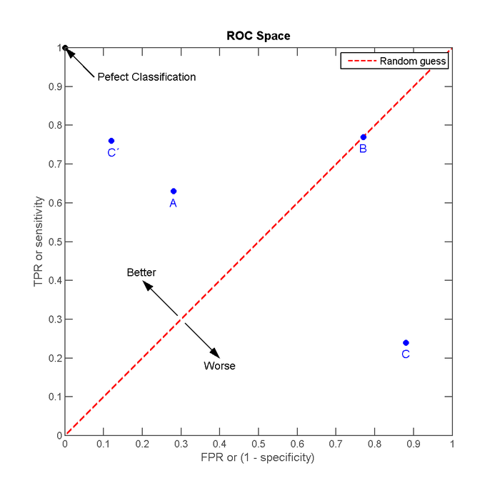
- AUC值： AUC其实就是ROC曲线下的面积，指随机给定一个正样本和一个负样本，分类器输出该正样本为正的那个概率值比分类器输出该负样本为正的那个概率值要大的可能性，AUX值越大的分类器，正确率越高
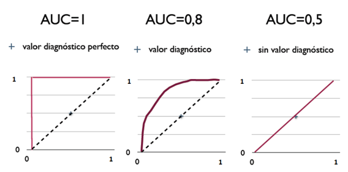
评分卡
我们通常所接触到的评分大都用于信贷审批，即申请评分卡（A卡，Application scorecard)。同时，业内还常用的有B卡（Behavior scorecard）和C卡（Collection scorecard），分别用于贷后管理及催收管理。
A卡是使用最广泛的，用于贷前审批阶段对借款申请人的量化评估；
B卡的主要任务是通过借款人的还款及交易行为，结合其他维度的数据预测借款人未来的还款能力和意愿；
C卡则是在借款人当前还款状态为逾期的情况下，预测未来该笔贷款变为坏账的概率，由此衍生出滚动率、还款率、失联率等细分的模型。不同的评分卡，对数据的要求和所应用的建模方法会不一样。
评分卡的表达形式是很简单的，如学历是硕士加几分这样。但是很多人就以为评分卡是拍脑袋出来的，这是个非常错误的想法，每一个变量的评分多少都是基于模型的结果，所以在此也给部分风控从业者小小的提示一下：评分卡是一个科学的度量工具，不是拍脑袋盲人摸象就能出来的，只知其一不知其二是很可怕的事情。
WOE
WOE的全称是“Weight of Evidence”，即证据权重。WOE是对原始自变量的一种编码形式
要对一个变量进行WOE编码，需要首先把这个变量进行分组处理（也叫离散化、分箱等等，说的都是一个意思）。分组后，对于第i组，WOE的计算公式如下：
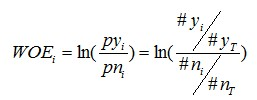
其中，pyi是这个组中响应客户（风险模型中，对应的是违约客户，总之，指的是模型中预测变量取值为“是”或者说1的个体）占所有样本中所有响应客户的比例，pni是这个组中未响应客户占样本中所有未响应客户的比例，#yi是这个组中响应客户的数量，#ni是这个组中未响应客户的数量，#yT是样本中所有响应客户的数量，#nT是样本中所有未响应客户的数量。
从这个公式中我们可以体会到，WOE表示的实际上是“当前分组中响应客户占所有响应客户的比例”和“当前分组中没有响应的客户占所有没有响应的客户的比例”的差异。
对这个公式做一个简单变换，可以得到：
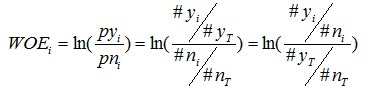
变换以后我们可以看出，WOE也可以这么理解，他表示的是当前这个组中响应的客户和未响应客户的比值，和所有样本中这个比值的差异。这个差异是用这两个比值的比值，再取对数来表示的。WOE越大，这种差异越大，这个分组里的样本响应的可能性就越大，WOE越小，差异越小，这个分组里的样本响应的可能性就越小。
IV
IV的全称是Information Value，中文意思是信息价值，或者信息量。
我们在用逻辑回归、决策树等模型方法构建分类模型时，经常需要对自变量进行筛选。比如我们有200个候选自变量，通常情况下，不会直接把200个变量直接放到模型中去进行拟合训练，而是会用一些方法，从这200个自变量中挑选一些出来，放进模型，形成入模变量列表。
我们需要一些具体的量化指标来衡量每自变量的预测能力，并根据这些量化指标的大小，来确定哪些变量进入模型。IV就是这样一种指标，他可以用来衡量自变量的预测能力。类似的指标还有信息增益、基尼系数等等。
对IV的直观理解
从直观逻辑上大体可以这样理解“用IV去衡量变量预测能力”这件事情：我们假设在一个分类问题中，目标变量的类别有两类：Y1，Y2。对于一个待预测的个体A，要判断A属于Y1还是Y2，我们是需要一定的信息的，假设这个信息总量是I，而这些所需要的信息，就蕴含在所有的自变量C1，C2，C3，……，Cn中，那么，对于其中的一个变量Ci来说，其蕴含的信息越多，那么它对于判断A属于Y1还是Y2的贡献就越大，Ci的信息价值就越大，Ci的IV就越大，它就越应该进入到入模变量列表中。
IV的计算
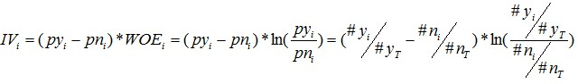
- 有了一个变量各分组的IV值，我们就可以计算整个变量的IV值，方法很简单，就是把各分组的IV相加：
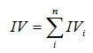
实例
假设我们需要构建一个预测模型，这个模型是为了预测公司的客户集合中的每个客户对于我们的某项营销活动是否能够响应，或者说我们要预测的是客户对我们的这项营销活动响应的可能性有多大。
我们已经计算了四个变量中其中一个的WOE和IV值。另外三个的计算过程我们不再详细的说明，直接给出IV结果。
最近一个月是否有过购买：0.250224725
最近一笔购买的商品类别：0.615275563
是否是公司VIP客户：1.56550367
前面我们已经计算过，最近一次购买金额的IV为0.49270645
这四个变量IV排序结果是这样的：是否是公司VIP客户 > 最近一笔购买的商品类别 > 最近一次购买金额 > 最近一个月是否有过购买。我们发现“是否是公司VIP客户”是预测能力最高的变量，“最近一个月是否有过购买”是预测能力最低的变量。如果我们需要在这四个变量中去挑选变量，就可以根据IV从高到低去挑选了。
为什么用IV而不是直接用WOE
IV在WOE的前面乘以了一个系数 
IV的极端情况及处理
IV依赖WOE，并且IV是一个很好的衡量自变量对目标变量影响程度的指标。但是，使用过程中应该注意一个问题：变量的任何分组中，不应该出现响应数=0或非响应数=0的情况。
IVi无论等于负无穷还是正无穷，都是没有意义的。
由上述问题我们可以看到，使用IV其实有一个缺点，就是不能自动处理变量的分组中出现响应比例为0或100%的情况。那么，遇到响应比例为0或者100%的情况，我们应该怎么做呢？建议如下：
（1）如果可能，直接把这个分组做成一个规则，作为模型的前置条件或补充条件；
（2）重新对变量进行离散化或分组，使每个分组的响应比例都不为0且不为100%，尤其是当一个分组个体数很小时（比如小于100个），强烈建议这样做，因为本身把一个分组个体数弄得很小就不是太合理。
（3）如果上面两种方法都无法使用，建议人工把该分组的响应数和非响应的数量进行一定的调整。如果响应数原本为0，可以人工调整响应数为1，如果非响应数原本为0，可以人工调整非响应数为1.
风控场景
金融
以金融为例，主要风控，是一个选件的过程，通过内置一些风控规则和数据支持，通过计算机更好的区分这个用户是否是好人、是否是人，是否能还款、有没有还款能力这几件事，来帮助金融类公司进行更好的借贷、分期等消费分期行为。 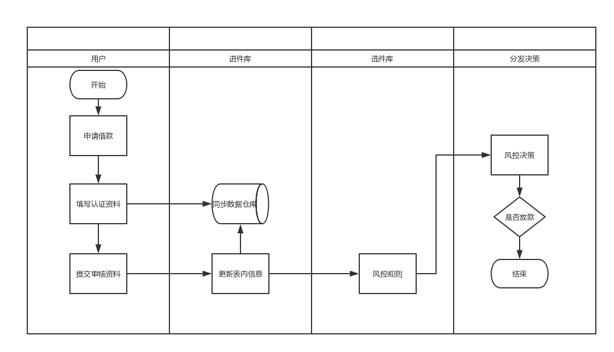
风控系统
风控目前最多的使用模型是通过各种规则进行各项目打分，也就是俗称的评分卡。
评分卡通过对各个维度预置评分，通过用户数据进入后对应不同的阈值所对应的分数，最终为用户生成一个总分。
举例：
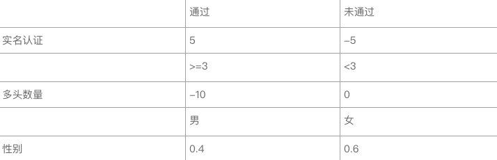
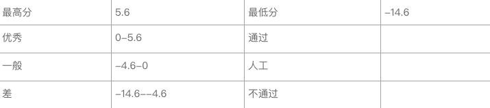
这里举了3组例子，第一组是比较普遍的通过数据接口进行验证的数据，第二组是通过数值来进行区分的数据，第三组是通过用户自身信息进行分类的数据。
如果，此时进来一个A用户，他实名认证返回结果，是通过。但是命中了5个多头，性别为女。那A用户的总分=5+（-10）+0.6=-4.4分。
如果按照上面例子的评级来说，A用户得分-4.4分，级别为一般，审核状况需要人工核实。
初始评分主要通过专家模型主观给一个分值，并且根据不同场景、不同性别等因素有所不同，后期根据用户数据不断校验模型。
系统框架
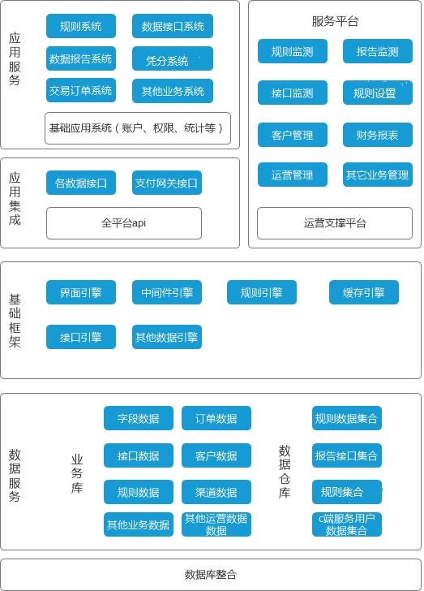
风控决策引擎
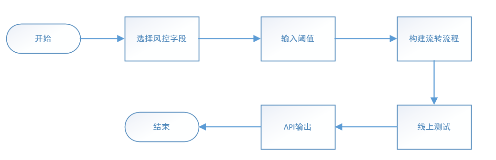
- 主要是前期对风控字段的数据清洗过程，通过对外部数据接口和手机设备指纹以及用户数据，进行统一化字段清洗，清洗后，通过硬编码形式进行平台的数据字段、数据字典的添加后，方便风控人员在前台进行任性的组合使用。
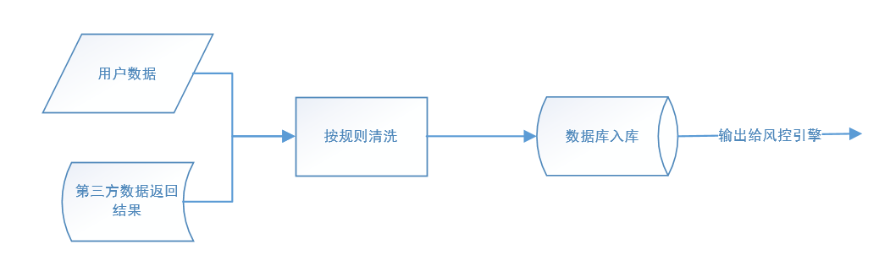
- 通过数据清洗后，系统用户就可以在前端进行配置了。
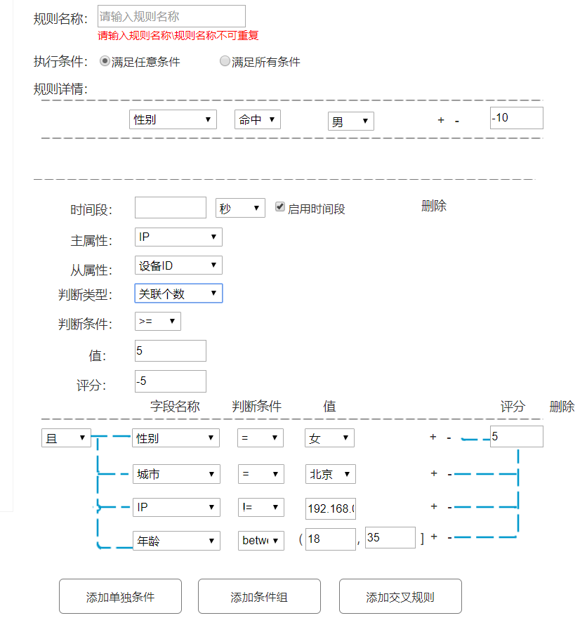
做了三种条件，支持单独条件、条件组合、交叉验证形式，对风控策略进行添加，并对相应的策略进行打分。
单独条件、条件组其实就是满足验证类的需求，我这里就不细说了。主要细说一下，交叉类规则。
交叉类规则，大部分应用点是在反欺诈模型上，通过多维度数据交叉形成的规则，尤其是最主要的时间段属性，做风控的大家应该要明确一点，时间段属性是能判断这个人是不是存在是机器的可能性的重要一点，尤其应用在部分平台的内容反作弊、活动反作弊等上面，反作弊主要是为了减少那些羊毛党他们下手的可能性，当然，并不是上了风控就能100%杜绝了，风控的只是通过各种手段，增加那些想作弊的人的作弊费用，从而降低他们作弊的可能性而已。
风控策略
流程：一个输入的内容按照预先设计好的节点通路，进行一个个节点的流转，最后转化为输出。节点之间的关系可以分为并联形式和串联形式，因为每个节点有自己的规则，可对每个节点设置成继续流转、或者终止输出的形式
可以通过设置流程进行节省风控费用或者其它问题，我们就可以通过流程化的设计，对于风控的策略以节点的形式进行流转
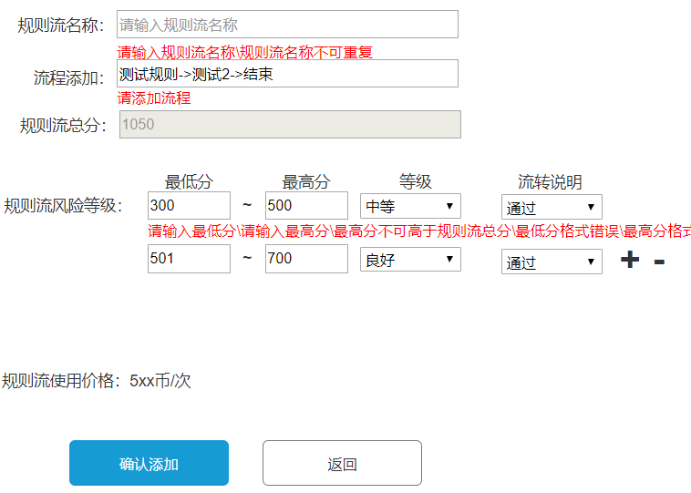
通过基础性配置后，进行流程添加，在流程中进行每个节点操作
通过每个节点进行单个节点的配置，由于，是否要进行节点流转的话，风控策略类不像oa的审批流通过人工进行处理，风控要做到90%的机审的话，套用上一章讲到的评分卡的知识，我们可以对每个节点进行单分值设置，当用户达不到基础分数时可以提前对用户进行拒绝处理，当然也可以让每个用户流程都走完后，再进行决策。
言归正传，当我们进行设置后，我们对于前期的已经完成了。但是风控就能上线使用了么？还不行，这就跟ABtest似的，风控策略上线也要进行相应的测试。测试，我们可以进行两种形式。
一种，通过该平台，手动输入相应的入参（这时只能执行简单验证类的，设备指纹的不可以，因为设备指纹需要额外进行手机信息的获取），看策略给出用户的评分是否按照预期。 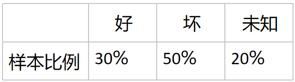
我们可以对线上策略进行截流，进行新策略测试，当然以免新策略出现问题，针对新策略的10%用户需要进行人工审核一下，同时保证新策略是否符合要求（比例不一定，看业务量）。当然实际场景中，对于策略的改变很少有较大的变化，大部分可能是数值的调整，数值的调整这些需要后台进行策略的审核情况、通过率进行跟踪，以免策略值的过高或过低产生审核问题。
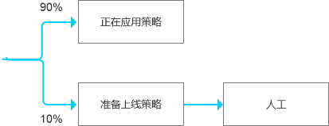
- 当所有都没有问题的时候，我们就可以切换至新的策略上了。策略输出形式，如果是公司内部产品就以API就好了，但是如果是针对企业级应用的平台化产品的话，建议以token的形式输出。
支付风控三要素：数据、规则和人
数据
数据的使用也是采购外部风控系统最大的痛点之一：如果是云模式，电商平台需要担心敏感信息外露的情况，如银行卡号、身份证号；如果是本地部署，对于这些标准化的系统产品而言，他们的数据接收方式也许不能适应公司自身的数据结构，这其中的改造成本也是非常巨大的。
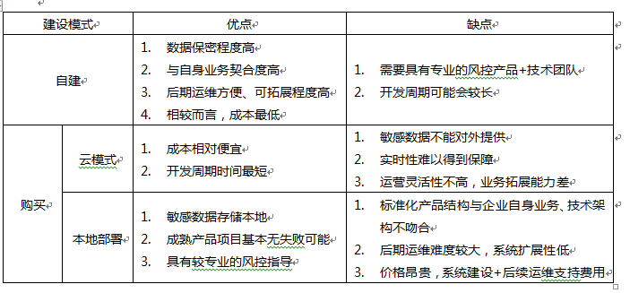
对于支付风控而言，需要喂给风控系统的数据包括该笔实时交易数据以及历史数据，当然对于历史数据的采集，为了保证系统实时性，一般都需要根据规则采用预处理的模式。
对于数据的种类、来源、存储等，各大电商平台因为自身业务特点可能大相径庭，但是不管采集过程如何，在支付风控系统内部，规则引擎至少要包括如下种类的数据。
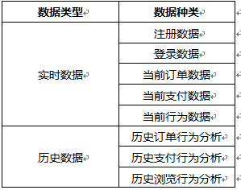
规则
往风控系统输入大规模的数据之后，系统需要对这些数据做一个反馈，是欺诈或者高危或者正常，对外界而言，风控系统只是一个黑盒，而在这个风控系统内部，是非常复杂的规则逻辑。这里的规则专门用来消化数据使用的。
支付将支付环节的数据推送到风控系统，与此同时，系统内部抓取该用户、该订单、该银行卡、该手机号等维度下的所有信息，跑大批的风控规则，进而输出结果，这样的逻辑很简单，但是真正在运营过程中才会发现一套规则体系的不易。-
一条新增规则是否能够在尽可能少的误杀情况下抓住最多的案例，这是一个策略制定者最头疼的问题。
一般来说，规则策略的制定无外乎包括以下几类规则：
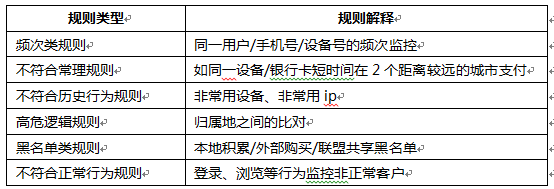
因为随着欺诈水平的越来越高，欺诈团伙也开始通过诸多手段途径尝试绕过电商平台的风控引擎，因此这些欺诈行为也越来越跟正常人的行为一样。我们想在如海一般的数据里捞出我们需要的数据并且根据蛛丝马迹来找寻可疑订单是非常不易的，这也是为什么风控做到最后规则有效性会越来越低的原因，经济学上对这种现象有一种较为合理的解释，边际有效性递减：即随着风控系统的不断深入，想多抓住一条新的欺诈订单就需要抓住更多的正常订单才可以。
一套规则体系行之有效的规则准确率可能只有个位数的百分点。以发展多年的美国银行的信用卡反欺诈规则体系为例，其规则的有效性人工核查之后不到三十分之一，而一般来说，甚至有的规则有效性会更低，但是这样的规则还是要放在规则体系内的，因为这条规则以前发生过未拦截到的欺诈案例。
对于这种有效性不断递减的反欺诈规则，仅仅依靠系统直接拒绝已然不能满足繁复的业务需求，因为正常订单被误判后的客户体验太差了，因此为了解决这种问题，交易中的人工监控需要被引进来，即人工来判断该笔订单是否有欺诈，如果有则拒绝支付，如果没有则支付成功。这里需要根据事前支付与事后支付的特点，及公司的业务特征，来构建合理的系统交互流程，以及更重要的人工运营流程。
进一步的，在支付中如果想降低运营负担，提升客户支付体验的话，那么在客人跳转收银台的时候如果能够提前预知风险，那么在收银台渲染的过程中则将高危渠道关闭，那么这不失为一个好的选择，目前业内已经有多家公司有这样的措施，如携程、苏宁易购等。
人
如果简单点说把数据+规则+计算引擎=风控系统的话，其实这也仅仅是一把武器而已，但是这对于一个公司的互联网风控体系而言则远远不够，体系=体制+系统，那么能把这把刀剑用好的最大的因素来源于人，来源于风控人员及更多交互部门运营人员的配合机制。
产品和开发团队：打造整个风控系统最为核心的环节，将业务的需求转化为系统的实现过程。对于支付的欺诈案件，需要作出的防范规则是多样性的，这需要能够实现各种各样的规则。需要以开发的语言准确表达风控运营对于欺诈案件的描述，这是一个需要经验积累的过程。
运营：整个支付风控系统最不可或缺的就是风控的运营们，利用风控系统能够准确识别盗刷欺诈案件；根据盗刷欺诈案件不断反哺规则体系和系统功能迭代；当然，在系统之外，还有更多运营层面的东西，如对支付的渠道的CB问题、公司内部的交互体系，这些都是整个风控体系的核心。
同行：在公司外部，有诸多的同行，及时分享新型支付欺诈案件特征，共享欺诈案件数据，学习欺诈案件的防控心得，这些都需要这些酒肉朋友的支撑；对内，财务、业务部门、客服部门、市场地推人员都是支付风控的小伙伴们，没有他们的支撑很难做到及时的止损，风控的作用就难以发挥出来。
从风控安全角度看IOT与AI
大背景
凡是新行业、新技术、新业务的发展，都一定会带来新的安全问题
四个方面的问题
手机APP端问题
硬件自身问题
云端问题
APP到云端间的通讯问题
IOT的风控
智能音箱：窃取语音隐私——只要我把音箱拆掉，把固件 dump 出来分析，再把自己的程序刷进去，就可以把这个音箱做成监视器，本来需要一个语音指令唤醒，但再修改之后就会把声音记录下来，传输到云端，这个我们已经实现了
智能楼宇：信号劫持控制——假设（黑产）我们就对智能设备进行的一些破解，发现协议其实是有问题的。假设做黑客模拟攻击掩饰，他们当时在无人机下面挂了一个信号发射器，飞到36层会议室外发射信号，把里面的灯控制了。（即相当于基本上智慧楼宇能够控制的东西我们都能控制，等于拿到了最高权限）
摄像监控：图像安全——在设备运行的时候，我们用远程攻击的方式就可以把摄像头视频替换掉（比如像一些电影中的侦探家、罪犯也有类似的做法，就是让一个物体或者一个人凭空消失），这里相当于是图像的安全，即里面看到的都是不“真”。那么，如果未来这种摄像头如果应用到了安防监控中，坏人要干一些事情，他是可以把自己凭空消失掉，查不到证据的。
AI的风控
数据问题：如果一开始给的是错误的、有问题的、不够量的数据，那么训练出来的模型肯定也有问题
溢出问题：比如处理图片文件时，可能由于处理不当导致溢出，进而拿到它的权限。如果把一盆的水注入一个杯子中，水会四处冒出，这时你就会充分理解溢出的含义。同样的道理，在计算机内部，如果你向一个容量有限的内存空间里存储过量数据，这时数据也会溢出存储空间。输入数据通常被存放在一个临时空间内，这个临时存放空间被称为缓冲区，缓冲区的长度事先已经被程序或者*作系统定义好了
滥用问题：黑产也开始利用AI技术，如让无人驾驶识别错误
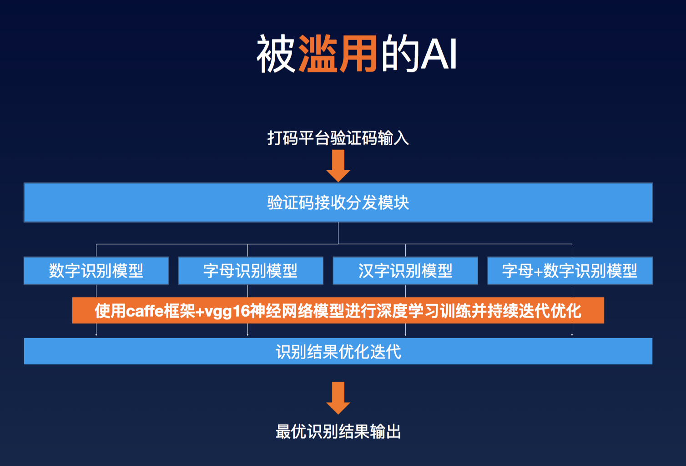
风控体系
四个特点
A 样本失衡。99.99%的交易都是好人，真正产生案件的交易是非常少的，这样一个明显是黑样本有缺失的情况下如何去建模，怎样去提升整个模型的准确率，这是我们要去考虑的；
B 数据海量。其实真正在风控体系运行中，你会发现风控采集非常非常多的数据，我们如何保证上亿数的数据去安全地应用，这对整个工程体系有巨大的挑战；
C 攻防激烈。整个风控是攻防非常激烈的过程，举个例子，支付风控和信贷风控最大的区别是，信贷风控在准入环节会做严控制，通过对对象的信息采集,在准入环节做强的onbording的控制，但是支付风控对于坏人是一个攻防和博弈的过程，比如今天有一个交易被模型判断成90分，此时坏人尝试支付1000元，但是被我们的风控系统抓到了，接下来这个坏人会怎么做呢？他可能会转而尝试去支付1元钱，不断试探我们的规则和策略体系，一旦他发现1元钱能支付成功，他会慢慢抬升它的坏交易行为。所以你会发现，其实风控本质是一个攻防的过程，坏人在反复测试你的策略，但同时你的风控系统也在不停地升级；
D 影响巨大。整个风控对业务的影响是非常巨大的，举个例子，如果今天风控系统识别风险的概率是50%，那意味着我们一半的交易是抓错的一半的交易是抓对的，那些我们抓错的的交易本质上会对用户带来一些困扰，因为他明明是好人，却会被风控抓到。所以风控的高准确概率是很重要的。
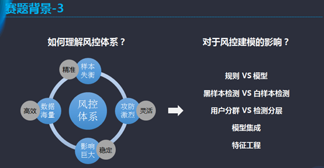
风控建模的影响因素
- A.规则vs模型
举个例子来说，大家会关心蚂蚁金服是规则用的多还是传统算法用的多还是一些深度学习、算法学习、迁移学习等一些创新算法用的多，其实在解决一个工业问题的时候，我们更看重的是哪个方法能够更快更高效地去解决问题，所以说不是越复杂的算法或者越创新的算法能解决更多的问题。所以面对这个赛题，我希望同学们可以思考的是是不是有可能抽象出一些明确的规则，因为规则的好处是准确性高，能保证一些基础的风险能cover到。相对于规则，模型最大的价值在于其本身有很多的变量，因为规则本身比较简单，大部分都是if /else的逻辑，但是对于模型来说，他可以消费非常多的变量，比如我们常用的randomforest模型，我们会用到50-80个变量，因为模型用到的变量更多，考虑的方面更全，所以准确性会更高，而用模型的方法可以更准确地去检测到那些绝对黑的人，也可以更好地去检测出黑or白比较模糊的坏人。
- B.黑样本检测vs 白样本检测
影响风控建模因素的第二块是样本的检测。目前大家去建模的时候通常把Y设置成黑样本，而我刚才也介绍过，风控就是一个激烈对抗的过程，所以当你把Y设置成黑样本的时候你会发现Y的pattern一直在变。这时候给大家一个启示，大家可以考虑去检测一些白样本，因为好人的行为是比较固定的，某种程度上来说，好人的行为更符合一个模型的定义，真实的实践中我们会去判定哪些人是坏人另一方面哪些人是好人，其实，两者是分不开的。从算法上来讲，好人的pattern比较稳定，更适合一些简单的算法去比较快的去定义，对于坏人，因为会涉及到一些攻防，所以坏人的行为会有偏移，对于抓坏人的探索上可以尝试更多新鲜的方法。
- C.用户分群vs检测分层
最后一个是用户分群和检测分层，整个建模领域中有个非常重要概念 segmentation,我们在做模型的时候可以对用户做分类，就是根据不同的人、群体去建模，最大的好处是把问题做分解，用分而治之的方法去解决问题。其实在风控的领域也是一样的，举个例子来说，在风控领域，蚂蚁金服的客户有千千万万，其中可能有一些商家，线下实体可能是一家小商铺甚至是使用收钱码的个体码商，也有一些个人用户，比如都市白领和大学生，不同用户有不同pattern。这里给大家一个启示就是大家建模的时候可以考虑做一些 segmentation,举一个最简单的例子，比方说对于商户类，一些的高频行为可能是make sense的,比如某些时候，他们可能会去做一些高频的交易，但对于个人类用户来说，他很难在一个段时间内做如此高频的交易，所以你把商户、个人用户一起建模的话就会产生一些问题，所以鼓励大家做一些用户分群，这样对每类用户的识别更加精准。第二个是检测分层，我们不仅可以去预测哪些是黑样本，也可以考虑去预测哪些是白样本，是不是可以考虑去建立一个分层体系，比方说先检测白样本，把好人捞出来，这样剩下的人中黑样本的比例会升高，然后再去预测黑样本。还有一些分层的方法是我们去看用户的第一笔交易，如果用户的第一笔交易是被盗了，那么在坏人pattern上第一笔交易会更明显，接下来的交易可能是另外一种行为。
- D.模型集成
接下来我们要讨论的一个对于风控建模的影响较大的topic是模型集成。今天我们有很多的模型、算法比如randomforest、GBDT、DNN，其实算法因为本身原理、性能、构成的不同适用于不同的领域或者适用于解决不同的问题，这时候希望大家考虑的问题的是有没有可能对不同模型做一个集成，举个例子，我们能不能尝试把一个deeplearning的model和一个DNN的model去结合,有没有可能尝试通过把一个问题拆解成多个问题然后去做模型的集成，最后我们要明白一个点的是你关注的是模型的结果而非你只能用一种算法，所以鼓励大家尝试用更多是算法或者用不同的算法之间去做集成。
- E. 特征工程
最后对于风控建模的影响要讲的是特征工程。特征工程的本质是你对一个业务的理解，基于你对这个业务的理解去定义变量是什么。这个点上会存在一个小问题，大家在初赛时拿到的数据本身并没有特别定义这个是什么类型，这个定义的业务含义是什么，而复赛提供的数据是有特定业务标志的，所以特征工程这个点大家在复赛可能会用的更多。
风控决策
画像产品
用户使用的设备、手机号码、IP地址、物理地址、用户信息、行为特征都可以经过数据搜集和分析，计算相关特征，应用此特征构建出各类画像产品。通过画像产品可以间接或直接地反映出用户的风险水平，用于相关决策。
基于规则的决策
通过统计分析和专家经验沉淀，可以根据业务场景不同，将多条判断规则进行组合，形成基于规则的决策判断。优点是可以灵活配置，实时修改，与业务系统剥离，并可以将专家经验转化为风险决策依据。缺点是规则的创建依赖专家经验和已发生风险事实，无法针对新的案件自动更新，且规则容易被欺诈者得知后绕过。
基于模型的决策
包括有监督的机器学习模型和无监督模型。有监督的机器学习模型的方法论是通过过去预测未来，利用打标数据和历史事件的数据分析和建模，对风险进行量化评估，无监督模型一般通过异常检测算法，基于异常数据“少且不同”的特征，多用于交易反欺诈诈测
复杂网络
复杂网络是建立在海量的数据综合汇总与分析的基础上，将各个行业的业务场景的数据打通，建立多维度数据关联，构建成知识图谱网络。通过可视化界面查询，事中团伙实时匹配识别，团伙分析报告等使用方式，对于识别团伙欺诈有较大帮助
风控运营策略
- 事前预防
风险关注名单
内部白名单
风险情报收集
- 事中侦测
实时自动化检测
多维度数据+用户行为+人工辅助判断
异常交易识别告警
- 事后跟踪
风险案件录入与维护
风险案件还原与追踪
相关联案件归类分析
风险案例库
风控案例
蚂蚁金服
三大核心能力
蚂蚁金服大安全风控体系在互联网的安全和金融方面有三大核心能力：
数字身份。在互联网，用户都是虚拟的身份，如何保证识别虚拟身份后面对应的自然人，是第一个核心的能力。
智能风控。这就是标准应用大数据、机器学习、人工智能的方式，在互联网的时代开展智能风控。
数据和隐私保护。这是所有企业做新型数字经济的底线。
因为在整个风控体系中，规则模型是一个非常复杂而且相互依赖的系统，如果系统不能够比较精准地定位，至少把风险异动的范围大幅缩小，我们将面临比较严重的运营管控问题。
四个体现方面
蚁盾风控大脑这三大关键能力，它主要体现在四个方面：
AI Ray：智能监控预警
AI Decision：多层级漏斗智能识别与决策
AI Insight：智能分析洞察
AI Optimize：智能优化
AI Ray：智能监控预警
传统风险监控方式是系统级监控，比如将某个阈值设置在5%或者是10%，属于统一规则设置。现在业务和系统融合起来，将业务经验预警和模型的智能预警相结合，能做到对问题的智能下探，自动监控。
AI Decision：多层级漏斗智能识别与决策
这是蚁盾风控大脑与传统专家风控系统是平面网状的系统最大的区别，传统专家风控的做法非常复杂且容易被攻破。而风控大脑是五级分层的防控体系，即T0、T1，T2，T3，T4层。
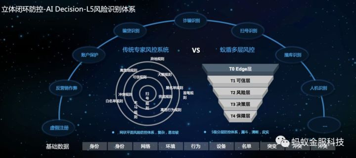
终端层T0是最接近客户的一层，T1、T2、T3、T4是服务器端层：
T0在移动设备上作风险识别，贴近用户和异常，最容易发现问题。
T1是快速识别层，比如判定某账号在相应的WIFI或4G环境下是安全的、是一个可信环境，那么就快速放过，这样把90%以上交易快速放过，可以极大减轻风控系统的压力。
T2是深度识别层，这一层是风险识别的主战场，通过大量的风险策略与模型去判断这个交易是不是有风险。打分因素包括：账户、设备、位置、行为、关系、偏好等因素，每一个大类里面都会包含很多细的策略，而这样的策略总计有10000条左右。尽管受这么多因素的影响，风控大脑却能保证运算这些复杂策略的时间很快，平均为0.15秒，因此用户基本上是无感知的。
T3是异步识别层，针对一些特定场景和风险，使用复杂算法，比如深度学习算法，提升整个风控算法的覆盖率和准确率。
T4是离线层。识别出风险后，在风险决策上使用模型驱动的个性化风险决策，给出最终的风险决策操作。
在风险决策，也可以做到千人千面，可以根据用户的喜好和可用性，适用性推荐不同的校验方式，例如老人尽量推荐使用人脸；手机丢失就不能使用短信验证了，就改为其他验证方式等。
AI Insight：智能分析洞察
蚁盾风控大脑特别强调“人机协同”的理念。计算机擅长的是存储、搜索、比对，这是重复性的工作。而人擅长的是洞察分析。通过计算机，可以实现快速定位异常，将可能的异常交易和对象缩小在一个相对较小的范围内，避免大海捞针，然后，由人来分析判定是不是风险。
AI Optimize：智能优化
策略的产生需要经过多维分析、策略推荐、仿真、上线等几个过程，时间和人力成本很高。而采用机器学习方式，则能够有效降低这些成本。其中一个很重要的概念是迁移学习，迁移学习可以实现同样的模型在切换了应用场景后，仍然具有较好的效果。
多种数字核身方式
以人脸识别、指纹识别、虹膜识别、活体检测等技术为主的生物识别，以及智能设备终端、传感器识别等，组成了蚁盾风控大脑数字核身解决方案。
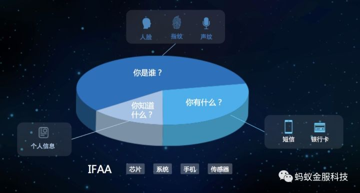
目前，蚂蚁金服人脸识别错误率降低在百万分之一的水平，它通过软件算法与数据的融合达到硬件级的精准度，并且具有更好的普适性；同时，独有的活体和眼纹等专利技术防止各种照片、视频、3D软件等伪造冒用，进一步提高识别安全性。
风控的未来：AI算法、区块链
目前，蚂蚁金服已进入由算法驱动的智能风控时代，深度学习、迁移学习、无监督学习等，保障了蚁盾风控大脑能够自学习发现风险，并且成熟模型上线到新场景时也能快速落地。
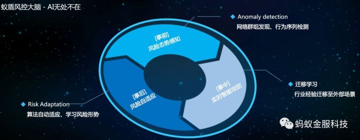
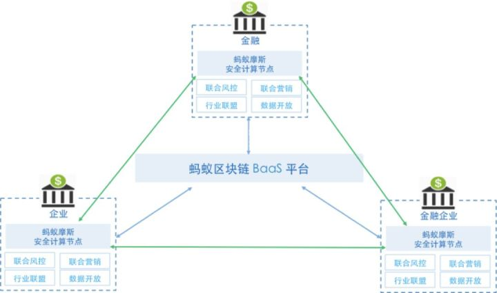
灰色产业链
在互联网行业做风控，首先需要学会的是：你要知道你的对手是谁、他们是怎么做的、他们想做什么、他们在哪做、他们什么时候做（who，how，what，where，when），这样才能不断提高现有的业务风控水平，在不断变化的业务环境中get到新业务可能存在的风险点并做好对预知风险的防范措施。
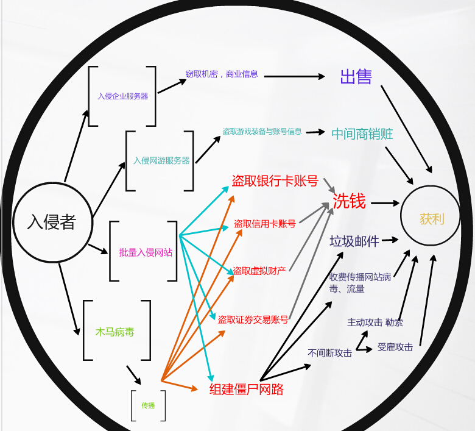
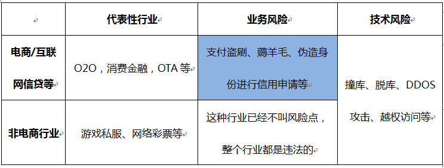
支付盗刷
盗刷端
卡号、身份证信息、手机号的泄露
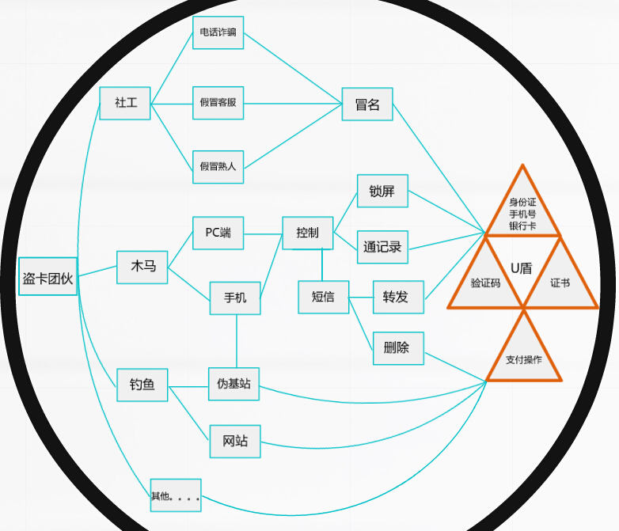
验证码窃取
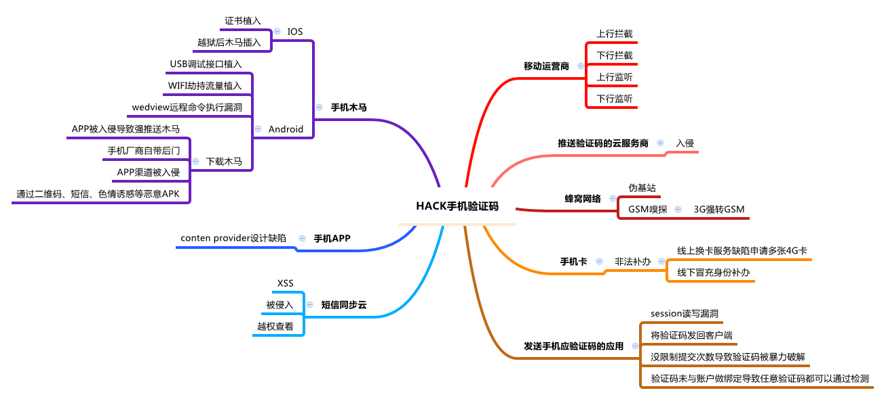
销赃端
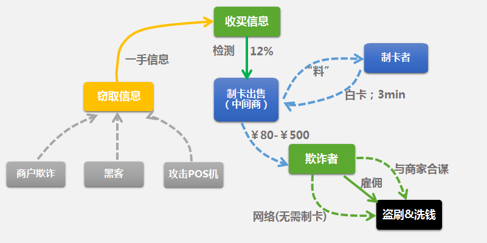
电商业务作弊/流程漏洞产业链
注册领券端
褥羊毛
销赃端
可刷的网站优惠券信息共享群
供应商商户端账户泄露/虚假供应商
商户端信息泄露
现在带有O2O性质的企业都有自己的商户端，而对于商户而言对密码的重视程度不高，因此会有很多黑产团伙利用诸多手段套取商户手里的密码。
虚假供应商
对于供应商的审核也是很多O2O和电商行业的漏洞，一个虚假供应商能做的事情很多，除了套用平台发放的优惠券之外，还有一个非常重要的套现的作用
电商信贷欺诈
信用额度套现
对于有信用支付的电商网站而言，这种类型的信用套现危害暂时体现不出来，可能过了几个月的时候开始出现坏账，美团点评曾经紧急关停过花呗支付渠道
身份冒用欺诈
目前形形色色的电商公司都有自己的消费金融公司，也有很多需要上报人行征信，在网上申请额度的过程也特别简单，因此欺诈风险成为网上信贷机构不可估量的损失，对于网贷来说欺诈风险远远大于常见的信用风险
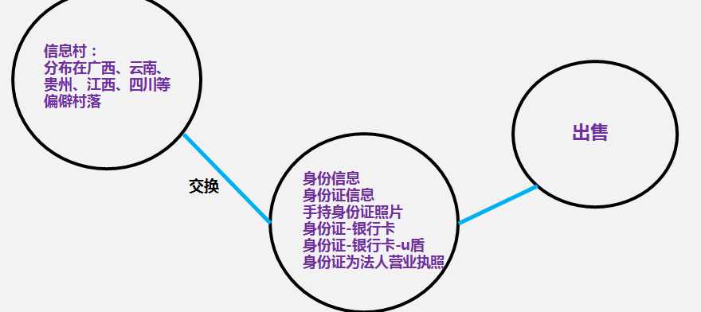
什么是黑产流量？
简单来说就是“不正常、不正当、不安全”之类的流量。移动互联网上至少有相当数量的点击、下载、安装甚至是点赞、评论都并非是真实用户所为，而是由一些木马或自动化工具来完成的。
流量僵尸木马的攻击过程主要分三个阶段：一、下载恶意插件；二、刷指定网页；三、刷指定的搜索引擎。
流量僵尸木马会联网从控制服务器上下载关键词，并使用下载到的关键词来模拟用户的搜索行为。控制服务器选取的关键词是经过精心设计的，不仅和当日新闻热点有关，而且选词范围非常丰富，这就使得木马所模拟的搜索行为看起来更加真实，更加不容易被一般的搜索引擎的反作弊机制发现。
常见的风控问题
- 有哪些验证码类型？
—–图形、滑动、语音、人机验证…..
- 常见内容风控手段？
—–自动鉴黄、关键词检测、代理IP库识别、一次性邮箱后缀库、各类小号库….
- 产品在业务上存在哪些潜在「被薅」风险？
—–P2P金融、电商为重灾区
- 如何平衡验证码与注册率之间的平衡？
—–验证码识别难度基本与注册率成反比
- 各大主流验证码识别平台手段与价格？
—–有些平台业务覆盖了语音验证码了，问你怕不怕？
- 各类验证码识别成本？
—–人肉识别验证码的市价低至0.18元/个问你怕不怕？怎么拦截？
- DDoS攻击：全称是 Distributed Denial of Service，翻译成中文就是分布式拒绝服务。一般来说是指攻击者利用“肉鸡”对目标网站在较短的时间内发起大量请求，大规模消耗目标网站的主机资源，让它无法正常服务。在线游戏、互联网金融等领域是 DDoS 攻击的高发行业。
风控的数据把戏
为什么总有乙方号称他的模型效果达到0.6
首先，什么是风控模型中的KS值
KS用于模型风险区分能力进行评估：指标衡量的是好坏样本累计分部之间的差值，举个例子就是模型达到0.6可能是识别出的70%的坏人中有10%的好人，也可以是80%中有20%
KS的计算步骤如下：
\1. 计算每个评分区间的好坏账户数。
\2. 计算每个评分区间的累计好账户数占总好账户数比率(good%)和累计坏账户数占总坏账户数比率(bad%)。
\3. 计算每个评分区间累计坏账户占比与累计好账户占比差的绝对值（累计good%-累计bad%），然后对这些绝对值取最大值即得此评分卡的K-S值。
- 好坏样本累计差异越大，KS指标越大，那么模型的风险区分能力越强。
建模样本坏样本比例过高
（1）如果建模样本中好坏样本比例good/bad=50/50，坏账率为50%；k-s值0.6指的是如果在误杀20%好用户的情况下可以识别80%的坏样本；那么使用模型之后的结果为good/bad=40/10，坏账率变为20%；这个我们做风控策略的人都知道在使用一些较好的变量的情况下是有可能的，因为毕竟做到50%的坏账已经是够烂的了。
（2）如果建模样本中好坏样本比例good/bad=80/20，坏账率为20%；k-s值0.6指的是如果在误杀20%好用户的情况下可以识别80%的坏样本；那么使用模型之后的结果为good/bad=64/4，坏账率变为5.88%，其实我们知道这个一个模型是很难做到。
通过上述这个例子我们知道，不同的样本比例的情况下K-S值提升的难度是有很大不同的，不同模型的K-S值比较优劣前提是要基于建模样本比例类似，否则不具有横向比较性。
样本滞后性
乙方一般选用的样本都是来自于甲方数月之前的业务数据，但是选用变量的时候存在着滞后性，而这种滞后性会导致变量偏差，比如最简单的芝麻信用分，在3个月前进行业务申请的时候是680，但是此时该用户的芝麻信用分因为多次逾期已经降到550了，所以在建模的时候有很多模型方都没有考虑到这种变量时滞性，尤其是重要变量的时滞性，导致模型能够得到一个超高的k-s。
模型过拟合
这个我相信专业的建模人员都不太会去犯这样的错误，但是不可否认还是有很多良莠不齐的乙方用不懂业务的纯建模人员，在这样的过程中会犯类似的错误，尤其是深度神经网络和随机森林这样的算法，刻意的调参有可能达到过高的k-s值，这才是真正的数据把戏。
模型的k-s值是一个很好的体现模型效果的变量，但是一定要注意了，不要被这样的数据把戏给蒙蔽了，业务人员还是要懂一点模型才不至于被忽哟，当然风控的建模人员也要懂一点业务才行。